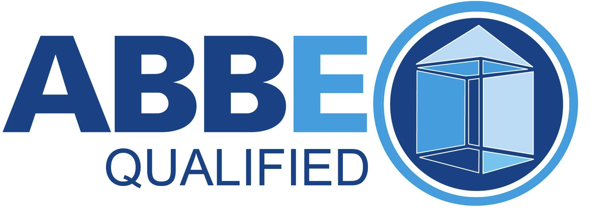

Heating Efficiency
Reviewing heating setup, boiler performance, and where warmth may be wasted.
ABBE Qualified
Refurbly is ABBE qualified to carry out energy assessments and provide practical recommendations for improving the way a home uses energy.
This can be especially helpful before renovations, refurbishments, extensions, or heating-related upgrades.

What it looks at
Reviewing heating setup, boiler performance, and where warmth may be wasted.
Looking at areas where the home may be losing heat or using energy inefficiently.
Suggesting energy-aware improvements that can fit naturally into refurbishment work.
Clear, realistic suggestions focused on changes that make sense for the property.
Helping homes feel warmer, more comfortable, and better suited to everyday living.
Identifying improvements to consider before repairs, extensions, or upgrades begin.
Best for
Energy analysis is useful before starting a project because it helps decide which changes can make the home feel better and work more efficiently.
Understand energy improvements before walls, rooms, or finishes are changed.
Review heating needs and efficiency before replacing or improving systems.
Plan the new space with comfort, heat loss, and efficiency in mind.
Get Started
Tell us about your property and Refurbly will get back to you with next steps.
Request an Assessment